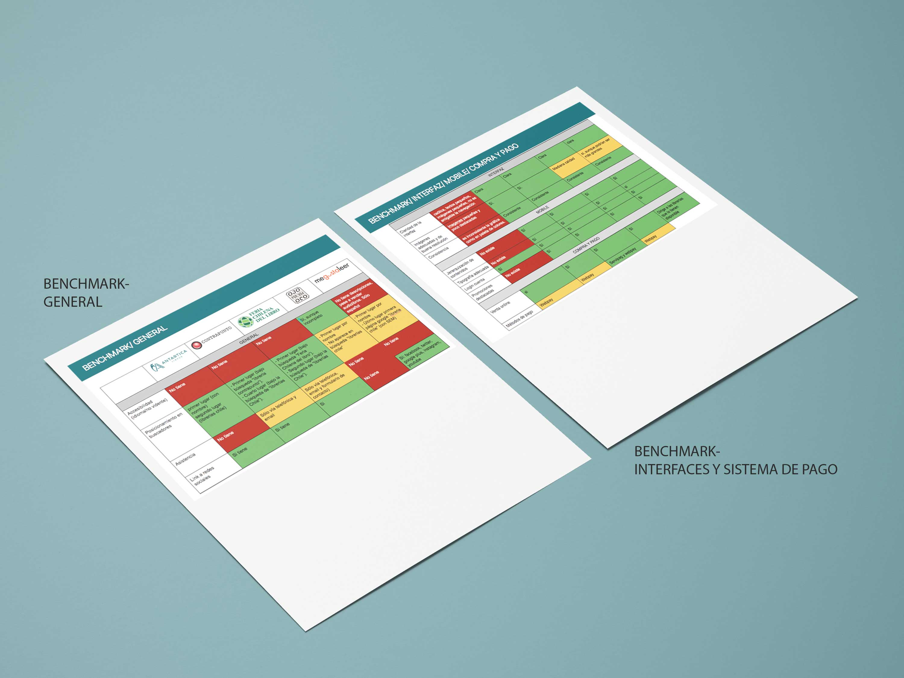
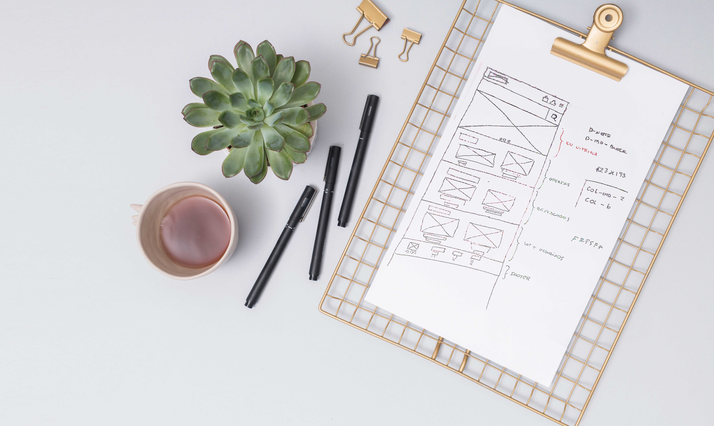
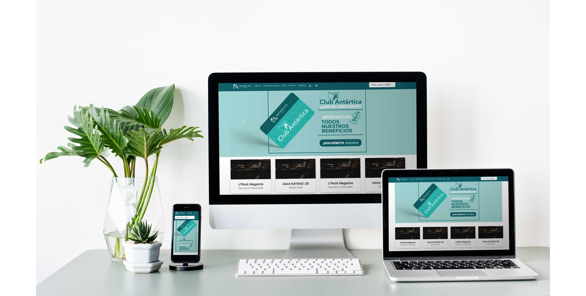

Caso de estudio:
sitio con Baja afluencia en compras online.
Cliente:
Libreria Antartica
Metodologías y herramientas:
Benchmark, perfil del usuario digital. HTML5, CSS,Nbootstrap.
Objetivo:
Investigar a nuestra persona que realiza compras de libros online, saber desde que escenarios se encuentra y hacer que su experiencia de compra se grata, haciendo que nos prefiera por el servicio entregado.
Sitio actual - algunas problematicas encontradas
- Mejorar la arquitectura de la información:
- Acotar la extensión de la página, siendo poca amigable en la búsqueda.
- Destacar el buscador y simplificar la búsqueda
- No tiene sistema de accesibilidad para personas ciegas, en especial si venden audiolibros.
- Utilizar la paleta de colores corporativa que refleje la identidad de marca en el sitio
- Destacar carro de compra,no se aprecia por lo que dificulta la compra online

Bencharmark - investigación
Wiframe
se define estructura y estilos básicos para trabajar en el prototipado
Prototipado final
Mock upp del prototipado final en distintos dispositivos, acorde a las necesidades del usuario, que se vieron reflejadas en la investigaciíon antes vista.
